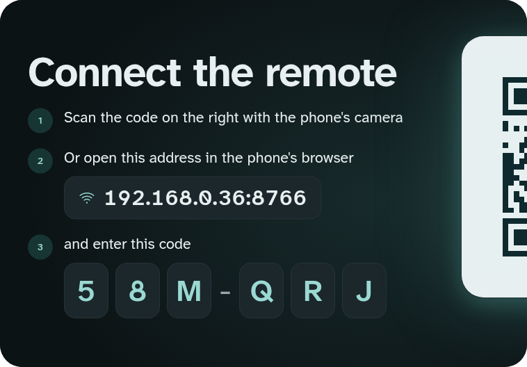
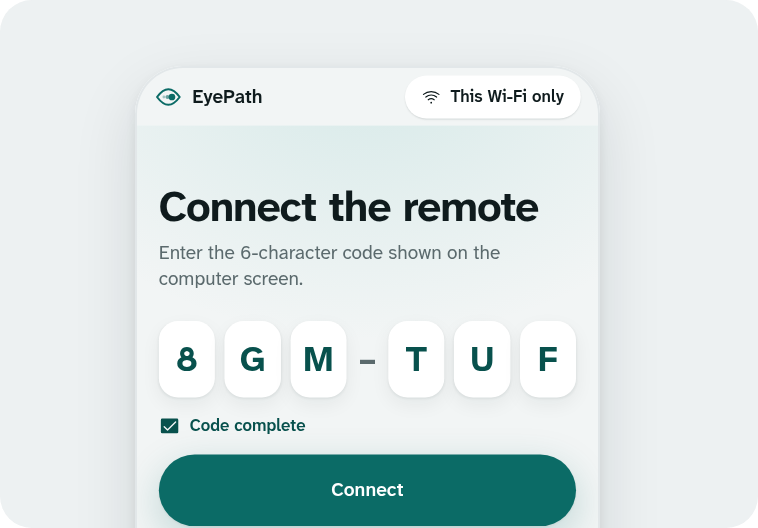
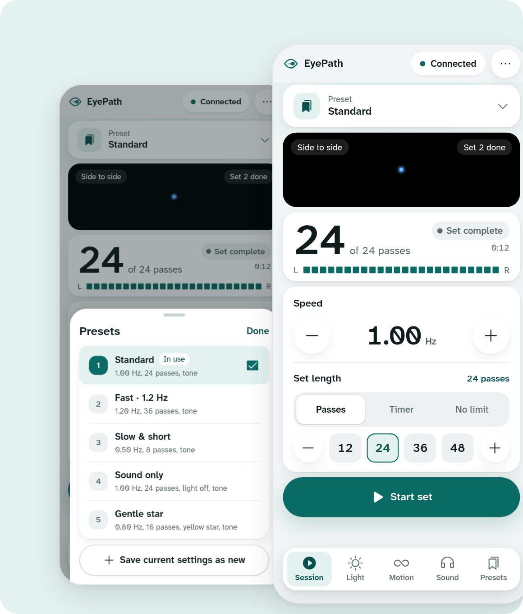
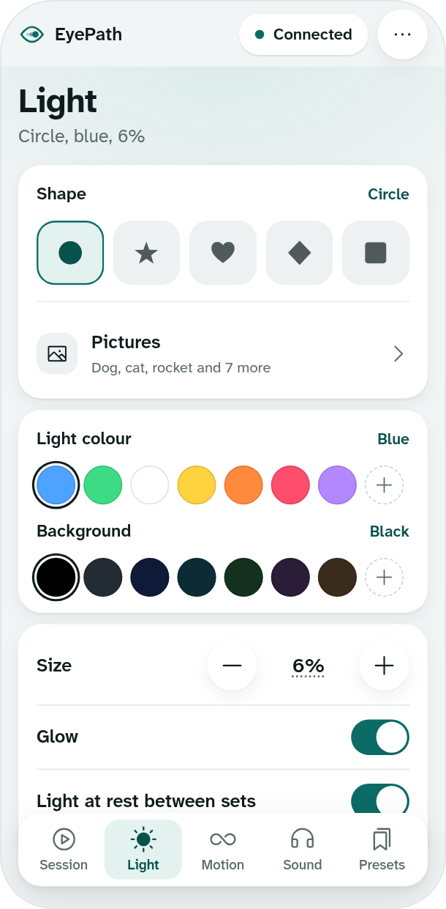
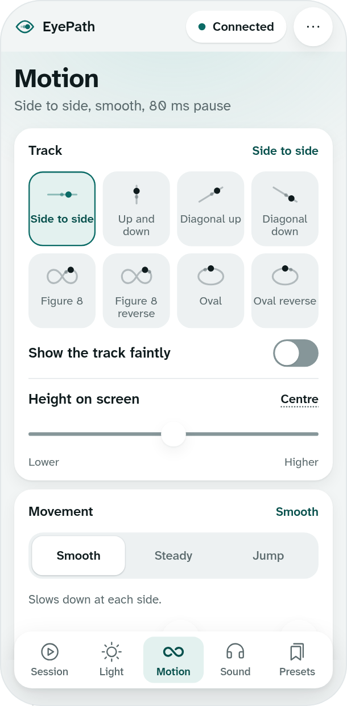
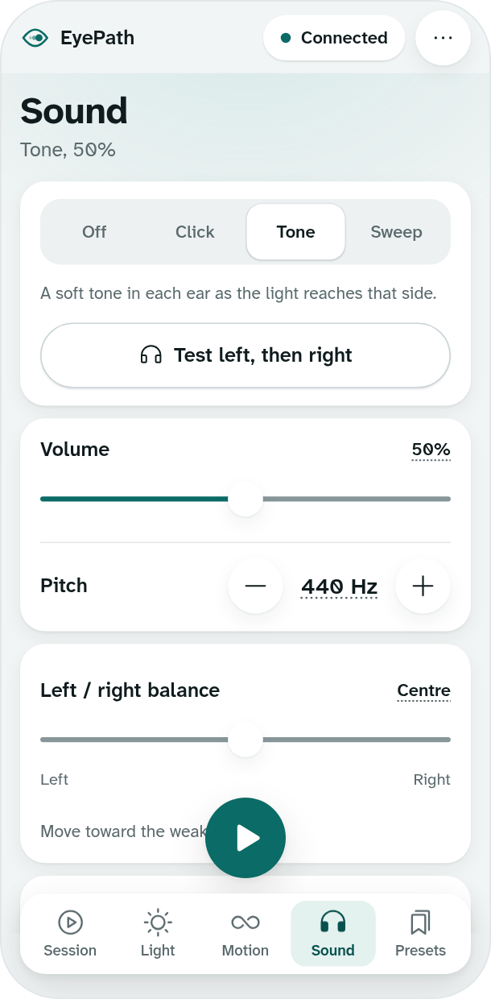

How it works
Install EyePath on the Windows or Mac computer the client will watch, using its own screen or a TV or second screen connected to it. Your phone needs nothing installed; it's the remote.

Open EyePath
It fills the screen with a QR code and a short code. A new code is made every time it opens.

Scan with your phone
Or type the address and code into any browser on the same Wi-Fi. The screen turns into the light bar.
Run your sets
Start, stop, speed, track, colour and sound, all from the phone. Sets end cleanly with the light gliding home.
Your phone is the remote
Every control is on your phone, so you can keep watching the client.
Change speed mid-set without the light jumping.
Choose a number of passes or a timer. Stop finishes the current sweep, then the light glides back to the centre.
Save the settings that work for a client, including their sound delay and balance.

Light, motion and sound
Each tab changes the client screen as you adjust it.

Pictures instead of the light
Ten friendly pictures can follow the track in place of the light. Pick one with a tap on the phone, even mid-session.

Eight tracks, three ways to move
Side to side, up and down, both diagonals, and a figure 8 or oval in either direction. Glide, steady pace or jump.

Bilateral sound
A click or tone on each side, or a sweep that follows the light, with a left/right test, balance and Bluetooth delay.
Made for the therapy room
A light bar's essentials, plus things that are hard to get from hardware.
Colour flashes, numbers or letters appear on the light at random moments, at easy, medium or hard. The answers show on your phone.
Colour flashes may not be suitable for people with photosensitive epilepsy or sensitivity to flashing light.
Every screen works out the light's position from a shared clock, so a busy Wi-Fi doesn't make it stutter, and each tone plays as the light reaches the side.
No phone nearby? Press Space to start or stop, the arrow keys to change speed, or S to move the light to another screen.
The remote follows your phone's setting, or pick Light or Dark under Room & devices. The client screen stays dark, so it fades straight into the light bar.
EyePath runs entirely on your computer and your local Wi-Fi
There's nothing to sign up for and no cloud service. It works on a Wi-Fi with no internet, or on your phone's hotspot.
Only your settings and the presets you save. No session logs, no recordings, no analytics.
Only a phone that scans the QR code or types the code can control it, and nothing stays connected after the app closes.
The code is public under the AGPL-3.0 licence, so anyone can check what it does. This website has no cookies or trackers either.
Setup and troubleshooting
EyePath isn't signed by Apple or Microsoft yet, so both show a warning the first time.
Windows says "Windows protected your PC"
Mac says it can't check the app
My phone can't connect
- iPhone with Chrome, Firefox, Edge or Brave: open Settings → Privacy & Security → Local Network and turn it on for that browser. Safari doesn't need this.
- Check the phone is on the same Wi-Fi as the computer, and turn off mobile data to be sure.
- Turn off any VPN or ad-blocking app on the phone.
- Make sure the computer's firewall allows EyePath. The app's QR screen has steps for your system.
- Clinic or guest Wi-Fi often stops devices reaching each other. Turn on your phone's hotspot and join the computer to it.
Can I use it without the phone?
Which headphones?
Download EyePath
Install it on the computer the client watches. Your phone needs nothing installed.
You'll also need a phone with a browser on the same Wi-Fi, and headphones if you use bilateral sound.
For trained clinicians. EyePath is a tool for trained clinicians, not a treatment in itself. It doesn't diagnose or treat anything on its own and is meant to be used only as part of therapy with a qualified, EMDR-trained therapist. It is provided as is, without any warranty.
The colour flashes in dual attention may not be suitable for people with photosensitive epilepsy or sensitivity to flashing light.